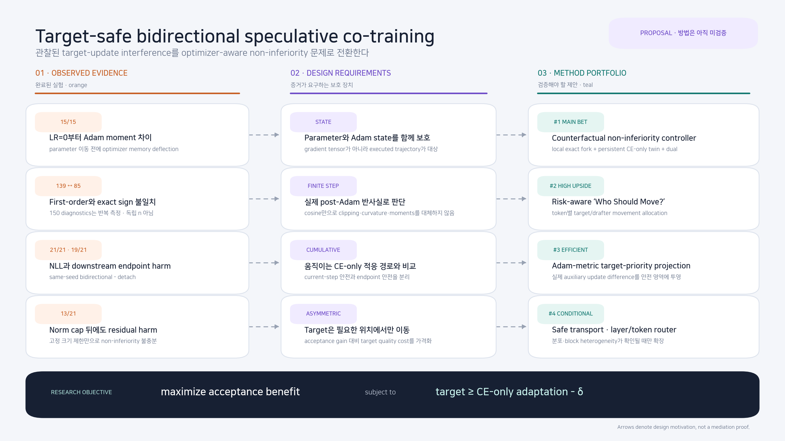

Parameter gate만으로는 부족할 수 있다.
→ parameter와 Adam state를 함께 commit한다.Acceptance를 위해 target까지 움직일 때, target 품질은 어떻게 지킬 것인가?¶
TARGET-SAFE BIDIRECTIONAL SPECULATIVE CO-TRAINING
연구 제안서 · 제안 방법은 아직 미검증
Standalone pretrained AR only
MEDUSA/EAGLE out of scope
두 독립 pretrained autoregressive model의 bidirectional acceptance training을 단순한 loss-weight tuning이 아니라, CE-only adaptation 대비 target non-inferiority를 제약으로 둔 optimizer-aware control 문제로 재정의한다.
21/21Naive target NLL 악화same-seed bidirectional − detach
19/21Full downstream macro 하락5/5 pair point means
15/15Step-1 Adam moment deflectionLR=0 · parameter movement 전
13/21Norm cap 뒤 residual harmcap − detach downstream macro
위 숫자는 완료된 실험의 관찰값이다. 반면 이 문서의 방법과 성공 기준은 연구 제안이며 아직 실험 결과가 아니다. Step·token·prompt는 독립 표본이 아니고 training seed만 inferential unit이다.
1. 문제를 다시 정의한다¶
Exact speculative decoding 자체는 target-side draft loss를 요구하지 않는다. 이 문서는 target도 acceptance objective를 보게 하는 실험적 bidirectional extension을 꼭 사용해야 할 때의 안전장치를 다룬다.
같은 parameter와 AdamW state에서 CE-only와 joint 후보를 계산한다고 하자.
\[
(\theta^0_{t+1},S^0_{t+1})
=U_{\mathrm{AdamW}}(\theta_t,S_t,g_{CE}),
\]
\[
(\theta^\beta_{t+1},S^\beta_{t+1})
=U_{\mathrm{AdamW}}(\theta_t,S_t,g_{CE}+\beta g_{aux}).
\]
우리가 풀어야 할 문제는 loss 두 개의 평균이 아니라 다음 제약 최적화다.
\[
\max_\beta\;B_{acc}(\theta^\beta_{t+1},\phi_{t+1})
\quad\text{s.t.}\quad
L_{safe}(\theta^\beta_{t+1})
-L_{safe}(\theta^0_{t+1})\le\epsilon.
\]
NAIVE SCALARIZATION
CE + β·acceptance
합성 gradient↓공유된 target AdamW history↓품질은 사후 평가
고정 β나 norm은 target quality를 명시적 제약으로 다루지 않는다.
CONSTRAINED CONTROL
CE-only 반사실을 기준으로 후보 선택
동일-state AdamW fork↓target safety test↓feasible 후보 중 acceptance 최대화
Parameter와 optimizer state를 하나의 실행 trajectory로 보호한다.
g_CE tensor 자체가 오염되는 것은 아니다. g_CE와 g_aux는 별도로 계산되며,
문제는 둘을 합쳐 실행한 applied update와 Adam state가 CE-only 반사실에서
벗어난다는 데 있다.
2. 증거가 요구하는 설계¶

그림 1. 주황색은 완료된 관찰, 보라색은 설계 요구사항, 청록색은 아직 검증되지 않은 방법 제안이다. 화살표는 설계 동기를 뜻하며 causal mediation을 뜻하지 않는다.
Raw cosine sign은 finite AdamW step을 대체하지 못했다.
→ same-state post-Adam 반사실을 본다.한 step의 안전만으로 누적 안전을 주장할 수 없다.
→ persistent CE-only trajectory를 둔다.고정 global norm은 quality constraint가 아니다.
→ violation에 반응하는 controller가 필요하다.Pythia–Mamba에서는 local CE alignment가 도움 방향인 경우에도 endpoint가 나빴다. 따라서 negative cosine은 필요조건이 아니다. Current-step shadow는 joint optimizer history에 조건부인 반사실이고, cumulative detach 비교의 mediation decomposition도 아니다.
3. 제안 포트폴리오¶
Evidence fit ↑Defensible novelty →
#1Counterfactual
controller
controller
#2Who Should
Move?
Move?
#3Adam-metric
projection
projection
#4Safe acceptance
transport
transport
#5Layer/token
router
router
CMoment
firewall
firewall
정성적 research judgment이며 측정된 성능 점수가 아니다. 위치는 새 선행연구나 pilot 결과에 따라 바뀔 수 있다.
현재 증거와 가장 직접적으로 연결되고 구현 가능성이 높다.
두 독립 모델이라는 구조를 가장 독창적으로 활용하지만 최적화 위험이 크다.
Exact fork를 연속적인 저비용 안전 영역으로 근사한다.
Probability mass 또는 layer heterogeneity가 확인될 때만 확장한다.
4. Main bet: Counterfactual Non-Inferiority Controller¶
A · MATCHED START독립 target θ₀ / drafter φ₀shared parameter·adapter·optimizer 없음
↙↘
B1 · MOVING REFERENCEPersistent CE-only twinθ̄ₜ, S̄ₜ · 처음부터 누적
B2 · JOINT TRAJECTORYSame-state candidate forksCE-only · CE+α·aux candidates
↓
SLOW LAYERCumulative dualCE-only twin 대비 quality debt
FAST LAYERExact local safety gatefeasible α 중 acceptance 최대
↓
ATOMIC COMMIT선택한 parameter와 Adam state를 함께 적용untouched target NLL · full macro · FP32 exact AAL로 release 판단
Fast layer는 예를 들어
\[
\alpha\in\{0,0.125,0.25,0.5,1\}
\]
각 후보를 동일한 (θ_t, S_t)에서 실제 AdamW로 fork한 뒤,
\[
c_{local}(\alpha)=
L_T^{safe}(\theta^+_\alpha)
-L_T^{safe}(\theta^+_{CE})-\epsilon
\]
을 만족하는 후보 중 acceptance proxy가 가장 좋은 것을 고른다.
α=0을 포함하면 calibration batch에서 feasible fallback이 존재한다.
Slow layer는 동일 minibatch를 따라가는 CE-only twin과의 누적 차이를 추적한다.
\[
c_{cum,t}=L_T^{safe}(\theta_t)-L_T^{safe}(\bar\theta_t)-\delta,
\qquad
\lambda_{t+1}=[\lambda_t+\eta_\lambda c_{cum,t}]_+.
\]
반증 가능한 가설¶
- Exact gate는 first-order/cosine gate보다 current-step violation을 더 잘 줄인다.
- Persistent twin을 더하면 local-safe controller보다 endpoint NLL·macro를 더 잘 보호한다.
- Detach 대비 target non-inferiority를 만족하면서 naive joint AAL gain의 유의미한 일부가 남는다.
최소 결정 실험¶
5 model pairs × 3 seeds: exact gate와 first-order gate를 동일 compute로 비교- 이후 pair당 최소 5 seed: local-only와 local+cumulative controller 비교
- Gate용 safety data와 최종 WikiText-2/downstream test를 분리
α_t,λ_t, local/cumulative violation, target NLL, full macro, FP32 exact AAL 보고
중단 조건¶
- One-step violation은 줄지만 endpoint가 계속 detach보다 나쁘다.
- Controller가 거의 항상
α=0을 선택해 acceptance 이득이 사라진다. - Untouched downstream macro가 안전하지 않은데 WikiText CE만 안전하다.
5. High-upside bet: Risk-aware “Who Should Move?”¶
한 token에서 target과 drafter 분포를 p_θ, q_φ라 하면 overlap은
\[
A(p,q)=\sum_v\min(p_v,q_v)
\]
로 쓸 수 있다. 기존 bidirectional scalarization은 두 모델을 모두 움직이지만, target 품질 비용과 drafter 비용은 비대칭이다. 이를 다음 문제로 바꾼다.
\[
\max_{\Delta p,\Delta q}
\Delta A(p,q)
-\lambda_D C_D(\Delta q)
-\lambda_T C_T(\Delta p)
\quad\text{s.t.}\quad
C_Q(\Delta p)\le\epsilon.
\]
Overlap gain/quality cost 비율이 높을 때 target도 제한적으로 이동
정답 margin이나 held-out CE가 민감한 token에서는 target path 차단
두 모델을 움직여도 exact acceptance 이득이 작으면 update를 쓰지 않음
핵심 novelty는 generic multi-task weighting이 아니라, parameter를 공유하지 않는 두
모델 사이에서 누가 acceptance를 위해 움직일지를 명시적으로 배분하는 데 있다.
Target-side update 전체가 나쁜 것이 아니라 위험 대비 이득이 낮은 token까지 같은
β로 움직이는 것이 문제라는 가설이다.
최소 pilot은 drafter-only / always-bidirectional / token-risk allocator를 비교하고,
target non-inferiority와 exact AAL을 동시에 측정한다. Allocator가 항상 drafter-only로
수렴하거나, target 이동을 허용한 gain이 target checkpoint drift에만 의존하면 중단한다.
6. 나머지 후보와 역할¶
Adam-Metric Target-Priority Projection
CE-only와 joint의 실제 Adam update를 d₀, d₁이라 하고
r = d₁ − d₀를 held-out target descent half-space와 CE-only Adam metric의
trust region에 투영한다.
가설: Raw PCGrad보다 executed update를 더 잘 보호한다.
위험: MAdam과 priority-constrained optimization에 가까워 단독 novelty는 제한적이다. #1의 저비용 근사형으로 두는 편이 안전하다.
Quality-Constrained Acceptance Transport
Target 전체를 draft 쪽으로 당기지 않고, CE-only target 대비 KL budget과 정답
margin을 지키면서 overlap을 늘리는 p′를 구해 distill한다.
가설: 품질상 여유가 있는 probability mass만 acceptance에 사용한다.
위험: Token-level KL/margin이 sequence-level downstream 안전을 보장하지 않으므로 #1의 empirical gate가 필요하다.
Post-Adam Layer/Token Router
LoRA block 또는 token별 CE-only/joint update와 moment를 비교하고, acceptance-beneficial하면서 target-safe한 위치만 joint branch를 채택한다.
Pilot gate: 같은 run 안에 safe/useful과 unsafe block이 seed와 architecture를 넘어 안정적으로 공존할 때만 진행한다.
위험: 일반 subspace routing 선행과 겹치기 쉽다.
Dual-Moment Firewall
Target CE와 auxiliary의 (m, v)를 분리하고 controller가 승인한 auxiliary
update만 결합한다.
역할: Optimizer-state causality를 확인하는 ablation 및 #1의 방화벽 구성요소.
위험: AdaTask·MTAdam·MAdam 때문에 moment separation 단독 기여는 약하다.
7. 가장 먼저 할 2×2 원인 실험¶
Optimizer state가 harm의 원인인지 marker인지 확인하려면 parameter increment와 저장할 Adam state를 교차한다.
Applied parameter ↓
Persisted state →
Persisted state →
CE-only state
Joint state
CE-only update
ReferenceCE parameter · CE state
State-only exposureCE parameter · joint state
Joint update
Moment shieldjoint parameter · CE state
Naive jointjoint parameter · joint state
joint parameter + CE-only state가 naive보다 endpoint를 크게 회복하면 moment
trajectory가 핵심 contributor라는 강한 근거가 된다. 반대로 네 cell 차이가 거의
parameter update만 따라가면 moment firewall은 메인 방법에서 제거한다. 이는 mediation
decomposition을 자동으로 제공하지 않으며 matched seed·minibatch가 필요하다.
8. Stage-gated 연구 로드맵¶
δ, safety/calibration stream, untouched test, seed, FP32 rollout을 결과 전에 고정한다.
Comparator가 기존 detach를 재현하지 못하면 중단2×2 moment factorial, exact-vs-linear gate, layer heterogeneity를 짧은 panel에서 검사한다.
추가 정보가 Pareto를 개선하지 않으면 복잡한 구성 제거Small three pairs × 3 seeds에서 local gate와 cumulative dual을 구현한다.
Target safety와 acceptance proxy가 함께 남을 때만 확대5 pairs, pair당 ≥5 seeds, longer adaptation, full macro와 FP32 exact AAL을 실행한다.
Detach non-inferiority + exact AAL improvement 동시 충족Instruction/code/multilingual, full fine-tuning, 1B–8B 현실 모델쌍으로 범위를 넓힌다.
100-step LoRA 밖에서도 effect와 method가 유지되는지 확인
PRIMARY SUCCESS GATE
Detach 대비 target non-inferiority
+
FP32 exact AAL improvement
Teacher-forced overlap만 좋아지는 것은 성공이 아니다. Training seed 기반 interval과 사전 고정 margin을 사용하며, transparent latency를 production throughput으로 부르지 않는다.
9. Novelty boundary¶
- Raw gradient projection/conflict control
- Generic primal-dual learning
- Validation-driven loss weighting
- Task별 Adam moments 분리
- Moving CE-only adaptation reference
- Same-state post-Adam parameter+state comparator
- Independent pretrained AR pair의 acceptance objective
- Local conditional safety + cumulative non-inferiority
- Target safety와 exact AAL의 공동 release gate
- 모든 architecture의 필연적 harm
- Deep-network finite-run formal guarantee
g_CEtensor 자체의 corruption- MEDUSA/EAGLE 또는 scratch pretraining 일반화
- Cross-swap의 유일한 causal decomposition
가장 가까운 인접 연구인 Halfway Speculative Decoding은 target을 약한 draft 쪽으로 이동시키는 품질 위험을 다루지만 EAGLE-3형 target-conditioned head 설정이다. LK Losses는 direct-acceptance loss의 중요한 출발점이지만 기본적으로 고정 target에 대해 drafter를 정렬한다.
Generic optimizer 측에서는 PCGrad, AdaTask, MAdam, Priority-Constrained Descent을 반드시 비교해야 한다. Validation branch와 동적 weighting의 가까운 선행은 ForkMerge와 Auto-Lambda다. 따라서 “moment를 나눈다”나 “validation으로 β를 고른다”만으로는 충분한 novelty가 아니다.
10. 추천 논문 패키지¶
WORKING TITLE
DraftShield: Counterfactual Non-Inferiority Training for Independent-AR Speculative Co-training
- Mechanism: target-side acceptance loss가 applied update와 Adam trajectory에 일으키는 negative transfer를 여러 독립 model pair에서 규명
- Method: same-state exact gate와 persistent CE-only dual controller로 target non-inferiority를 직접 최적화
- Evaluation: target NLL·full downstream macro·FP32 exact AAL의 사전 고정 Pareto gate
가장 현실적인 main bet은 #1이다. #2는 가장 높은 novelty upside를 가지므로 #1의 안전 controller 위에서 token별 movement allocation으로 확장하는 순서가 좋다. #3–5와 moment firewall은 원인 실험이 지지할 때만 넣어, 방법을 불필요하게 복잡하게 만들지 않는다.
이 문서는 아이디어와 반증 가능한 가설을 정리한 연구 설계안이다. 제안 방법이 target non-inferiority나 acceptance improvement를 이미 달성했다는 뜻이 아니다.